Rules for the Assignments
Introduction
If you are creating an assignment to be shared with the children of a
class, you must remember that the properties of an assignment shared
with children of a class are those present at the time that the
assignment is saved for the first time. You may still add
questions after having saved an assignment and they will be shared
with the children of the class.
Here are some instructions for the section Properties when
creating an assignment.
To understand how to set the properties of an assignment, it may be
good to look at an existing assignment. There may be some in the
parent directories of your course that you may look at.
The section (or tab) Properties is composed of 7 main
sections that we will investigate in detail below:
Type of Assignment, Policy Set, General
Properties, Scheduling and Visibility, Feedback
(After), Reporting and IP Address/ Host Names
Whitelist.
Type of Assignment
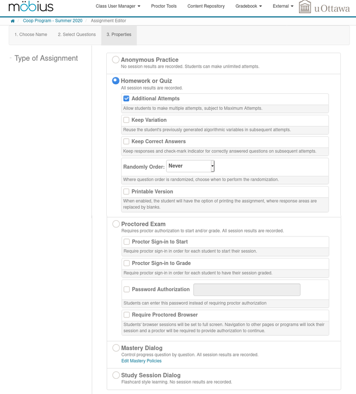
-
The simple type is Anonymous Practice. No grade is
recorded.
-
The second and probably the most often used type is
Homework and Quiz.
The items that you may want to check under Homework and
Quiz are Additional Attempts (checked by
default), Keep Correct Answers and Printable
Version. When students ask for a new version of the assignment
and Keep Correct Answers has been selected, they get the
exact same question only for the questions that they did
perfectly. Printable Version lets students print a copy of
the online assignment. They may work on the assignment on paper and
enter their solutions later.
-
The third type is Proctored Exam. You may consider
using this type of assignments to give an exam. In a computer lab
environment, this is probably a great tool. There are however
many issues when using this type of assignment for an exam at
home.
- The use of the Password Authorization in an exam at home
is the first issue. How will you distribute the password to all the
students? If there are 200 students, you basically have to give
away the password to all the students without doing any identity
check because all the students have to start at about the same time.
It is therefore not better than to open the exam to every body.
- If you select Require Proctored Browser, the exam starts
in the full screen environment. If a student access any other
application, he or she loses access to the exam. The student then
has to contact you to obtain access again to the exam. This is
great in a computer lab environment where you can control which
applications are installed on the computers and which are running in
the background. This is totally different if students are writing
their exam on their home computer. You don't know which application
is installed and running on their computer. If ever a popup window
open in the full screen environment, the student loses access to the
exam. Considering that must students are running chat and social
media software in the background, you must count on many students
being kick out of their exam by such application generating a popup
window.
- To control access to the exam in the Proctored Exam
environment, you have to use the item Proctor Tools in the
menu at the top of the Möbius screen.
-
The type of assignments Mastery Dialog has not been
used by the author yet.
-
Similarly, the type of assignments Study Session
Dialog has also not been used by the author yet.
Policy Set
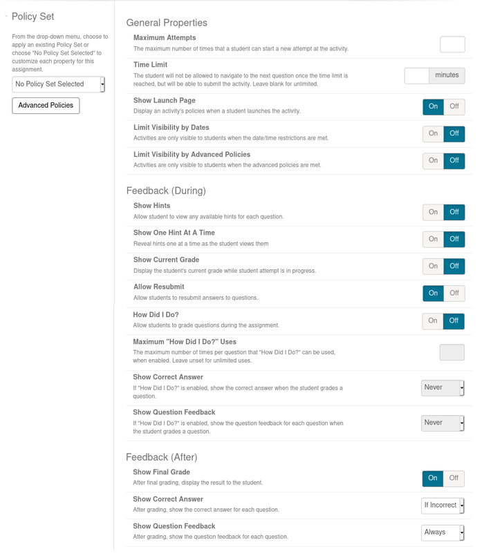
Using the pull down menu on the left margin, it is possible to
select a predefined policy set. You may define
a policy set to be used for all your assignments by
selecting the item Policy Sets under Current Class
as shown in the figure below. You get a form with all the elements
displayed above. In addition, there is a section entitle Only
Applicable to Lessons that you should ignore. As the title
says, it does not apply to assignments.
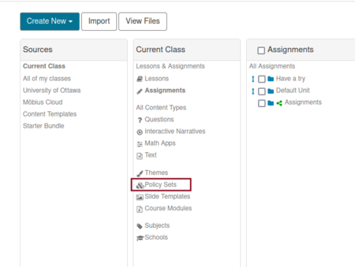
General Properties
- You may set a Time Limit for the assignment. Once
started, a student has this amount of time to complete the
assignment. The timer doesn't stop if the students log out.
- Show Launch Page must be On. You want and hope
that students will read the conditions for the assignments including
the starting and the due dates and times.
- Check Limit Visibility by Dates if you want students to
see the assignment on their list of assignments for only a limited
period of time. Otherwise, students will always see the assignment on
their list of assignments. They will not be able to access the
assignment before the Start Date or after the End
date. We suggest not to check this item. That way students
can see when the next assignment is coming.
- Leave Limit Visibility by Advanced Policy
turned Off unless you have defined advanced policies.
More on this subject later.
Feedback (During)
- Show Hints should be On. For the bank of
problems that we have produced, the hints are not hints about how to
solve a problem but hints about how to write expression in Möbius
like
ab is written a^b.
- Show One Hint At A Time should be turned Off.
- Show Current Grade should also be turned Off
because students can use it to figure out if they got the right
answer.
- Allow Resubmit should be turned On. This gives
the chance to students to modify the answers that they have given to
previous questions before submitting their assignment.
- How Did I Do? may be turned On if you want to
let students check their answer before submitting the assignment.
- You may impose a cap on the number of times that students may
use How Did I Do? to check their answer to a question by
entering the maximum number in the field associated to
Maximum
How did I do?
Uses.
- If you select the option How Did I Do?, you should
choose Never for the items Show Correct Answer
and Show Question Feedback. You don't want students
to see the answers and the detailed solutions. You only
want students to be told if their answer is right or wrong.
Feedback (After)
- Show Final Grade should be On unless you don't
want students to see their final grade.
- If you want students to get the answers and solutions after
the End Date that you will specify later, select
If Incorrect or Always for the item Show Correct
Answer and select Always for the item Show
Question Feedback.
Advanced Policies
It is possible to restrict the access to an assignment to students
who have satisfied some milestones based on previous assignments.
If you click on the button Advanced Policies in the left
margin, then you get the following display.
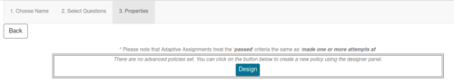
If you click on Design, then you get the following form.
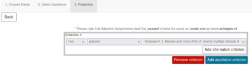
To create the first condition for the first criterion, you have
three pull down menus. The first one has the items has
and has not. The second pull down menu has the
items passed, made one or more attempts
at, made two or more attempts at, made three or
more attempts at, made four or more attempts
at, made five or more attempts at, made an
attempt today at and received special permission
for. The last pull down menu has the list of available
assignments. If you want to add another condition to the first
Criterion, you only have to click on Add alternative
criterion. This option is equivalent to a or. The
first criterion is satisfies if any of the condition is
satisfied.
Similarly, you may define a second criterion by clicking on Add additional criterion. This is equivalent to an and. All the criterion must be satisfied for the assignment to be given to the student.
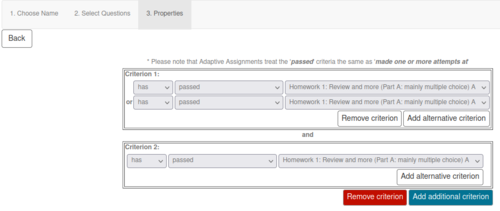
General Properties
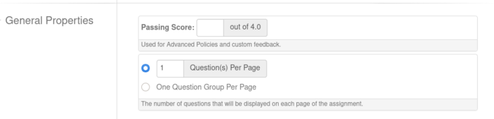
- Under Maximum Attempts, you choose the maximum number of
attempts that students may have for the assignment or
select Unlimited if students can try it as many times as they
want.
- You may set a Passing Grade for the assignment. This is
useful in section Feedback (After) below and for the
Advanced Policy section above.
- You should check Check Question(s) Per Page and type in
the number of questions that students should see per page. We
recommend one question par page. If you do not select this item,
students will get all the questions of the assignment on one page.
You may ignore the item One Question Group Per Page. This
is useful only if you have groups of questions of the form
2 among 5
and you want the two questions to appear
on the same page.
Scheduling and Visibility
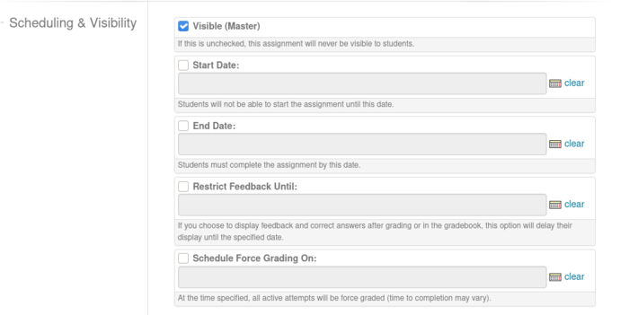
- You must check Visible (Master). If you do not, your
assignment will never appear on the students' list of assignments;
not even between the Start Date and End Date defined
below.
- Check Start Date and set the date and time when the
assignment will start.
- Check End Date and set the due date of the assignment.
- Check Restrict Feedback Until and set the date and time.
If you do not do this, students will have access to the answers and
detailed solutions right after they submit their assignment. You
may want to limit the access to the detailed solutions until
the End Date of the assignment at least. We suggest to
enter a date and time after the End Date to give you the
opportunity to change the End Date if you decide to give
more time to the students to complete their assignment.
- Check Schedule Force Grading On and set the date and
time. By default, assignments that have not been submitted by
the End Date are not submitted automatically. This gives
the instructor the possibility to change the deadline to submit the
assignment and give more time to students to do it. Students who
had not submitted their assignment can then keep on working on them.
We suggest to check this item and set the date and time to the same
date and time that were used for item Restrict Feedback
Until above. This still give you the opportunity to give more
time to do the assignment if you wish to do so.
Feedback (After)
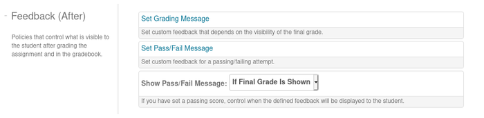
- You may ignore the item Set Grading Message. There is a
default message if the final grade is displayed. The message is
fine. You may want to set a message if you do not display the final
grade.
- If you have set a passing grade in the
section General Properties above, you may want to
use Set Pass/Fail Message to leave a message to the
students according to their result for the assignment.
- If you want students to get your Pass/Fail message, you must
set Show Pass/Fail Message to at least If Finale Grade
is Shown when the final grade is displayed.
Reporting
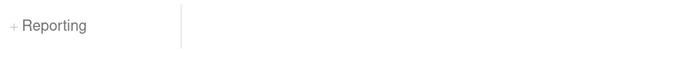
You may want that an email be sent to you after each student
submits his/her assignment. With a class of 200 students, that may
means 200 emails in your Inbox.
IP Address/ Host Names Whitelist
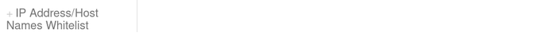
You may limit access to the assignment to a limited set of
computers. This could be very useful for a test in a lab where you
only want students using computers in the lab to access the test.